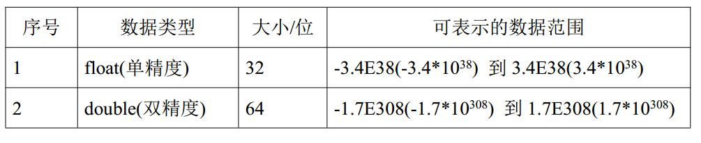

基本数据类型
整数类型：
| 数据类型 | 占用存储空间 | 存储范围 |
| byte | 1字节 | -27～27-1 |
| short | 2字节 | -215～215-1 |
| int | 4字节 | -231 ～ 231-1 |
| long | 8字节 | -263～263-1 |
存储范围：给数据类型变量赋值时不能超过各个数据类型的存储范围。
占用存储空间：1字节等于8bit，1bit等于一个二进制位数。比如二进制0100110总共7位数，就是7bit。
存储范围与占用存储空间的关系：存储范围等于2的占用存储空间的次方。比如byte的存储范围为-27～27-1，总共256个数，等于2的8次方，而1字节等于8bit。至于范围为什么是-128~127，是由于有符号位的存在，所以负数的值，最低可以到-128。
java的整形常量默认为int型，但是在声明long型常量必须在值的后面添加“L”（大小写随意），计算机才能判别。
浮点类型：

float型的精度有效数字为7位有效数字，double型的精度有效数字为16位有效数字。
java的浮点型常量默认为double型，在声明float型常量时，需要在值后面添加“F”（大小写随意）。
浮点型常量有两种表示形式，一种为十进制，一种为科学计数法形式。
字符类型：
char型数据用来表示通常意义上的“字符”。
字符常量的表现形式：
使用单引号' '括起来的单个字符，可涵盖世界上所有书面语的字符。
java中还允许使用转义字符'\'来将其后的字符转变为特殊字符常量。因为有些特殊字符在代码中有特殊的用途，比如想要输出一个英文 的单引号，但是单引号有作为char型字符常量的书写形式，这个时候就需要用到转义字符。
布尔类型：
boolean类型适用于逻辑运算，一般用于程序流程控制：
boolean类型数据只允许取值true和false，没有null，也不允许使用0或者非0的数来代替false和true。
引用数据类型
值null可以赋值给任何引用类型（类、接口、数组）的变量，用来表示这个引用类型的变量所保存的地址为空。
对引用数据类型赋值不像对基本数据类型赋值，对基本数据类型赋值是开辟出一个内存空间，也就是先做出一个盒子，在将数据放到内存空间中，这样，在内存不同的空间中就可能会存在相同的数据。而引用类型所创建的数据都会放在一片单独开辟出来的空间，在这个空间中不会存在相同的数据。引用类型变量要调用存储空间中的某个数据的时候，不是将数据拿出来，而是将数据所存放的内存地址拿出来。当程序运行到这个变量的时候就会顺着这个内存地址找到数据，从而引用数据去进行运算。
String类
String类是用来接收字符串的。
字符串就是由多个字母数字符号共同组成的一个串，需要使用英文的双引号括起来。
字符串可以合到一起写，也可以通过符号“+”连接起来。例如hello可以写成“hello”，也可以写成“he”+“llo”。